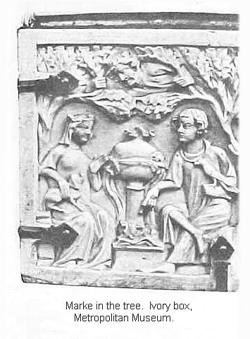

Melot
When the seneschal realized
he wasn't getting anywhere,
he adopted yet another approach.
At the court there was a dwarf,
who was called, it is said,
Melot petit of Aquitan.
It is also said he had some gift
in secret arts of divination
by observing the stars at night.
I make no such claims myself,
beyond what I read in my source.
In that accurate report
I find nothing about all this
except that he was learned,
clever and quick of speech,
a familiar of the king 14250
and admitted to the private chambers.
Marjodoc persuaded him
to observe Tristan and the queen
whenever he had occasion
to attend the royal ladies.
If he should thus succeed
in obtaining good evidence
of a love affair between them,
he would earn for all time
rewards and honors from King Marke.
Melot spent many hours
at this treachery of spying.
He constantly laid pitfalls
for unguarded talk and behavior
at all hours of the day and night
and soon had discovered
the love of these two lovers.
There passed such sweet endearments
back and forth between them
that Melot had, almost at once,
convincing proof of love,
and immediately informed Marke
that there certainly was a love affair.
The three of them discussed this find,
Melot, Marke, and Marjodoc,
soon arriving at a plan
agreeable to all of them—
if Sir Tristan should be barred
from further attendance at court,
everyone would quickly see
the truth about the two of them.
This was done right away,
just as the plan had called for.
For the sake of his own repute,
the king barred his nephew
from making any further visits
to the royal chambers,
or from appearing or being present
where any of the ladies were,
since there was common talk at court
which had to be counteracted,
lest serious disgrace and harm
befall himself and the queen.
And this was quickly put in force,
as decreed and requested.
Tristan avoided any private
contact or presence with the ladies.
No longer did he set foot
in the palace or the chambers.
The courtiers immediately noticed 14300
his absence from their company,
and began to trade vicious talk
much to his detriment.
Quickly he had an earful
of things more painful than ever.
He and Isolt, the two of them,
passed the time impatiently.
They shared sorrow and regret
deep in this new affliction.
They had pain on top of pain—
pain at Marke's suspicions,
and pain that they were now deprived
of any chance to be together
to talk and share their feelings.
From one hour to the next
each of them soon began
to lose heart and vigor.
Their natural health and color
began to weaken and pale.
The man faded for the woman,
the woman paled for the man,
Isolt for want of Tristan,
Tristan for want of Isolt.
Their affliction and need was sore.
It's no surprise to me at all
that their need was in common
and their pain unrelieved—
the two of them now shared
one single heart, one single mind.
Both their ill, both their weal,
both their death, both their life
was but one single texture.
Whatever afflicted one of them
equally hurt the other.
When one obtained some soothing,
the other at once enjoyed relief.
The two of them, sharing all,
for ill and weal were united.
The common heart's burden they bore
appeared so obvious to everyone
in their looks and their faces
that no denial of their love
could be found in their complexions.
Marke understood at once,
seeing plainly the effects
of their parting and separation,
so deeply were their hearts affected.
They yearned to see one another,
did they but know how or where.
He found a suitable pretext, 14350
commanding his hunting party
to make ready with their hounds
to ride at once into the forest,
giving them instructions
and letting it be known in court
that the hunt would last twenty days.
Whoever was skilled at this sport
or wished to use this occasion
to pass the time so engaged
was invited to ride out with them.
He took his leave from the queen,
commending to her during his absence
whatever pleasures she might choose.
Then in confidence he enlisted
Melot the dwarf for his purpose.
He was to lay snares again
for Tristan and Isolt
to entrap them in their secrets,
for which he would be rewarded.
The king himself rode to the hunt
with fanfares and flourishes.
His usual hunting companion,
Tristan, remained behind,
having informed his uncle
that he was not feeling well.
In truth the unwell hunter
meant to stalk his own game.
He and Isolt, the two of them
remained sunken in their sorrow,
anxiously anticipating
some chance or opportunity
that might perhaps make it possible
by some means or other
to see and be with one another.
Still they could think of no way.
Things having reached this state,
Brangaene came to see Tristan,
since she knew very well
how severe the heaviness
of his heart afflicted him.
They shared expressions of regret.
Ah, my pure one,
Tristan sighed,
what remedy may cure this ill?
How shall I and poor Isolt
now avoid our own destruction?
I know not what we could do
that might preserve our lives.
What advice can I give you?
said their ever-loyal companion.
May God have compassion on us 14400
that we ever saw the light of day.
We have lost, all three of us,
every joy and all our honor.
Never shall we have again
the freedom that once was ours.
Isolt, alas! Tristan, alas!
that ever I laid eyes on you—
since the whole of your misfortune
has come about because of me.
And now I see no means at all
by which I possibly could help you—
I can think of nothing that would work.
Well I know, as sure as death,
what anguish you must endure
the longer you are forced to suffer
this surveillance and restraint.
Since I can think of nothing better,
here is something you can do
as long as you are under orders
to absent yourself from our presence.
Whenever the chance presents itself
and you see that this may be possible,
cut a branch from an olive tree
and split it lengthwise into two.
Then mark one splinter simply,
carving into it a T,
and on the other side an I,
so that only the first letters
of your names appear.
Nothing more than this is needed.
Take it with you to the orchard—
You know where the brook is
that flows from the fountain there
down past the ladies' quarters.
Drop the branch into the water.
Let it drift with the stream
right past the door of our chamber.
By that gate we spend our days,
I and disconsolate Isolt,
weeping with our hearts' distress.
When we see the twig float by,
we will know by this sign
that you are waiting by the fountain.
Hide there in the shadow
of the olive and keep watch.
She who longs for you will come,
my lady, your beloved,
and I with her, if possible,
if you will allow me to.
Sir, whatever little time 14450
remains to me in this life
I mean to spend with you two,
devoting myself to you always,
assisting you in every way.
If I could give a thousand hours
of my life for one hour only
in which I might assure your joy,
I would gladly spend them
and also the rest of my days
if I could make your lives more pleasant.
Bless you, beauty,
Tristan cried,
never had I any doubt
of your faithfulness and honor.
Those two virtues could not be planted
more deeply in any other heart.
If fortune happens to favor me,
I will use it to advance you
to honors and satisfaction.
As badly as my wheel of fortune
seems to turn at the moment,
if I knew how I could give
my days and my hours
to your profit and advantage,
gladly would I end my life
so much the sooner, believe me.
Moved to tears, he continued:
faithful, most blessed woman—
then took her into his embrace
very closely and tightly,
kissing her eyes and cheeks
in the grip of deep emotion
over and over, many times.
My beauty,
he managed to say at last,
now do as loyalty requires—
let me and that yearning sorrower,
the blessed Isolt, be always
commended into your care.
May your thoughts ever be
both with her and with me.
—Gladly will I do so, sir.
Now give me leave, I must go.
Act as I have advised,
and do not take too much concern.
—May it be God, who preserves
your honor and your lovely person!
In tears Brangaene inclined her head
and then departed sorrowfully.
Tristan the sorrower went
to cut and set the branch adrift
as Brangaene, his counsellor, 14500
had advised him to do.
Thus he and his lady Isolt
met by the fountain in the shadow
secretly at every occasion,
some eight times in eight days,
without anyone discovering
nor any eye observing them.
But one night it came about,
when Tristan stole into the garden,
that Melot, the detestable dwarf,
that instrument of the Devil,
by some chance, I know not how,
began to have his suspicions.
Stealthily following Tristan,
he watched as he approach the tree,
and stood a short while there.
Very soon a lady came
whom he took into his arms.
But who the woman might have been,
that he could not be sure of.
On the next day after this,
Melot followed up his find.
A little before the noon hour
with every devious intention
he came to visit Tristan,
his breast suffused with guile
and pretended solicitation.
Indeed, Sir,
he began,
a deep concern has brought me here.
I know that you are much beset
by prying eyes and watchfulness.
At no small personal risk
I have dared to come to you,
not least because Queen Isolt,
as faithful as she is virtuous,
strikes pity into my heart.
At this time, unfortunately,
she is most concerned for you.
She asked me to come to you,
since she had no one else
who would undertake this mission
or could be trusted with her message.
She commissioned and implored me
to pass to you her greetings
with the utmost sincerity,
and urgently requested
that you come, I know not where,
but you would know, to meet her again,
where you had met before at nightfall,
using exactly the same path 14550
at the same time and hour
as you have been accustomed.
Of what she means to warn you,
I do not know, but believe me,
I am more greatly saddened
by her pain and your distress
than at anything else I know.
Now, sir, My Lord Tristan,
give me leave, for I must go.
I will tell her whatever you wish.
I can't stay here any longer—
if those at court should find out
that I have come here to you,
it could go badly for me.
They're already saying, and believe
that what has gone on between you
is something entirely of my doing.
I declare before God
and before both of you
that I never had any part in it.
Friend, are you dreaming?
said Tristan.
What's this tale you're telling me?
What do they believe at the court?
What have we done, I and my lady?
Begone! And God's curse go with you!
I tell you this, and I mean it—
whatever anyone thinks or says,
if my own sense of honor
didn't keep me from it,
you'd never again be tattling,
at court or anywhere else,
of the things you dreamed up here.
Melot retreated, and rode at once
to find Marke in the forest.
He now had, he reported,
the plain truth of the matter
beyond any further doubt.
He explained the how and where
of what went on at the fountain.
You may see it for yourself,
said Melot. Sire, if you wish,
ride there with me tonight.
I am certain of one thing—
however they may arrange it,
they will both be there tonight.
Then you can see with your own eyes
what goes on between those two.
The king rode with Melot
to witness his own misery.
When they arrived at the orchard 14600
as darkness was already falling
to make their planned observations,
neither the king nor the dwarf
could find a suitable hiding place
that would give them a good view
and still afford concealment.
Now, right next to the fountain
stood a mighty olive tree,
not tall, but very wide-spreading.
To this they turned their efforts,
managing to climb up into it,
then sat silently among its branches.
Tristan, as it grew darker,
again stole upon his path.
When he arrived in the garden,
he made his marks on a twig
and laid it in the stream
to drift down on its way.
This was the earnest message
to the yearning Isolt
that her companion awaited her.
Tristan paced over the grass
by the spring, where the shadow
of the olive tree fell.
Stopping there, to reflect
and think over in his heart
the unease that afflicted it,
he chanced to notice the shadow
that Marke and Melot cast
by the bright moonlight shining
through the branches of the tree.
He gave no sign that he had seen
these two shapes on the grass,
but was struck with great fear,
recognizing immediately
the danger and the trap.
Lord God,
the prayer flashed through his mind,
now preserve Isolt and me!
For if she fails to notice
the shadows and this trap in time,
she'll run right straight into my arms.
If that happens, then we'll have
nothing but trouble and misery.
Good Lord, receive us both
by thy mercy into thy care!
Watch over Isolt on this path,
be always with her, step by step—
warn my pure one somehow
of this trap and treachery
that has been laid for both of us 14650
before she says or does something
that someone would think improper!
Yes, dear God, have mercy
upon her and upon me!
Our honor and our lives
be this night in thy hand.
Now his lady the queen
and Brangaene the pure,
true friend to both of them,
went to sit by the stream
to await Tristan's message.
They sought their garden of sorrow
at every hour possible,
when they could avoid the danger,
to grieve over their misfortune.
There they paced up and down,
sorrowing and lamenting,
repeating their tale of yearning.
Very quickly Brangaene
spied the twig with its message
drifting by in the stream,
and beckoned to her mistress.
Isolt snatched it from the water
and read Isolt
, read Tristan.
Quickly taking up her cloak
she wound it closely over her head
and stole away through the flowers
toward the tree and the fountain.
When she had reached the point
were the two caught sight of each other,
Tristan stayed where he was.
He had not done that before—
Never, when she came to him,
had he not run to meet her.
Now Isolt pondered
deeply and earnestly
what he might mean by this,
and it troubled her heart deeply.
She let her head sink forward
and hesitantly approached him,
much afraid at every step.
As she came with measured tread
a little nearer to the tree,
she saw shadows of three men,
although there was but one there.
Then at once she understood
the danger and the ambush
and also had the explanation
of Tristan's attitude toward her.
Ah,
she thought, these assassins, 14700
now what's to become of us?
How did they lay their snares here?
My lord is surely there somewhere,
well hidden, wherever he is.
I much fear we are betrayed.
Protect us now, merciful Lord,
help us to get out of this
and escape honorably—
save him, dear Lord, and save me!
Then the thought occurred to her—
did Tristan know about this trap,
or had he perhaps not detected it?
It seemed to her that he knew
something of what was going on,
because of his strange behavior.
So keeping her distance, she played her part.
Sir Tristan, I am much displeased
that you are so certain
of my foolish compliance
as to expect me to appear
and speak to you at such an hour.
To preserve and guard your honor
toward your uncle and toward me
there are much more suitable ways,
according better with your loyalty
and also with my reputation,
than insisting on so late a meeting
with such a show of secrecy,
presuming on my patience.
So speak up—what do you want?
I stand here in agitation
solely because Brangaene
bid me with great insistence,
after she had left you today,
that I must at least appear
and listen to your complaint.
In having yielded to her
I fear I was much mistaken.
She awaits me here, close by,
and however safe I may be,
considering people's wickedness
I would sooner sacrifice
a finger from this my hand
rather that it should be known
that I was present with you here.
So many tales have been invented
and spread about you and me—
There are many who would swear
you and I were involved
in some illicit relationship. 14750
The whole court echoes with this fable.
God himself knows well
how I am disposed toward you,
to which I might add a word:
let God be my witness,
and may my sins not be atoned
by anything more nor less
that by my high regard for you,
to that degree, in my heart—
I declare, before God,
that never did I love a man—
all men, today and always
remain excluded from my heart—
except that one man alone
to whom I surrendered
the blossom of my maidenhood.
Now that my lord, King Marke,
entertains such suspicions
concerning you, Sir Tristan,
God knows, in this he is misguided,
the more so, since he has learned
what my feelings are for you.
All those who spread such tales about me
are much deceived, before God.
They cannot see into my heart.
In a hundred thousand ways
I have proved my esteem for you
because of the favor in which I hold
those I am obliged to favor.
I am not false to anyone,
be it knight or commoner—
it's only right, on the contrary,
and also does me proper honor—
that I should treat with respect
anyone my lord Marke
favors or accepts as kin.
No matter how this is perverted,
I will not turn away from you
because of all these vicious lies.
Sir, now tell me, what you wanted,
because I soon must depart.
I cannot stand here forever.
Exalted Lady,
Tristan said,
I have not the slightest doubt
that insofar as you are able,
you would never say or do
anything opposed to virtue.
And yet a host of slanderers
by entangling you and me with lies
have robbed us, without grounds, 14800
of my sovereign's favor,
through no fault of our own,
as God himself will be our witness.
Your Highness, now consider this,
most virtuous of queens,
and be pleased to recognize
my innocence in this matter
respecting both you and him—
intercede with my lord
that he may show me royal forbearance,
by his noble courtliness
suspending the enmity
he feels for me, without reason,
at least for another week.
Until then, may he and you
conduct yourselves toward me
as though I were in your favor.
I am making preparations
to take my departure.
All of us may be dishonored,
my lord the king, you, and I,
if your attitude is hostile
while I make ready to depart.
Then our enemies will gloat—
'you see, there was something to it—
look at that, there goes Tristan,
slinking away, who knows where,
fleeing the king's royal displeasure.
Sir Tristan,
Isolt replied,
sooner would I suffer death
than make some special case
for my lord to indulge you
any privilege on my behalf.
Surely, you know very well
that I have fallen, long since,
into disrespect because of you.
If he should know, or find out
that I had come to meet you
thus alone, late at night,
I would deserve such disrepute
that never again would he hold me
in any regard or affection.
But if it should come to this,
that, of course, I cannot foresee.
And still it confounds me
how my lord, King Marke,
ever conceived these suspicions,
or who put the idea in his head.
Never have I known you, sir—
and we women are not easily fooled— 14850
to practice any seduction
in your behavior toward me,
nor have I ever used on you
any deceptive enticements.
I know not what has brought upon us
such undeserved ill repute,
lamentable and vicious as it is—
may God in his righteousness
take notice of this evil
and be quick to remedy it.
Now, sir, dismiss me—
I will depart, and do you also.
Your burden and affliction,
before God, pain me deeply.
Indeed I had many reasons
to hold you in great disfavor,
which, however, I now renounce,
moved as I am to see
that at this time, because of me,
you must endure such unjust blame.
For this I feel I should forbear,
and when the day and time arrive
that you must take your departure,
sir, may God preserve and keep you,
and may the Queen of Heaven
take you into her care.
As to the request you have made—
if I knew that my influence
would attain anything,
I would act and advise
in such a way as might promise
some benefit or help for you.
I greatly fear, however,
my lord would turn it against me.
But no matter what the event
or what hazard I may run,
I will defend you from the charge
of having acted disloyally
toward my lord or toward me.
Whether I succeed or not,
I will endorse your request.
I thank you, My Lady,
said Tristan,
and inform me of what response
you receive in this matter.
The reply might well indicate
I would be wise to take flight—
I may never see you again.
If so, whatever then befalls me,
oh, most virtuous of queens,
be upon you the benedictions 14900
of the entire heavenly host!
For God well knows, earth or ocean
never bore so pure a woman.
My Lady, your person and your soul,
your reputation and your life
be ever commended unto God!
Thus they bid each other farewell.
The queen retraced her steps,
sighing and sorrowing,
murmuring and amour-ing,
mumbling covert miseries
of body and of heart.
Tristan the sorrower
departed also sorrowing
and weeping inconsolably.
Marke, much saddened,
sat there in his tree,
regretting with great sadness
in every fiber of his being
that ever he had suspected
his nephew and his wife,
and cursed with a thousand curses
the curs who put him up to it
with all the force of heart and tongue.
He roughly castigated
the wretched dwarf Melot
for having so deceived him
and desecrated his pure wife.
They clambered back down the tree
and rode off to the hunting camp
sunk in deepest displeasure.
Marke and Melot each
bore a regret of his own:
Melot the deception
he was falsely accused of,
Marke the blame of distrust
he had laid on wife and nephew
and worse yet on himself
so degrading to all of them,
which he had then proclaimed
throughout the court and country.
As morning broke, he called together
all the members of his hunt
and requested them to carry on,
while he returned to the palace.